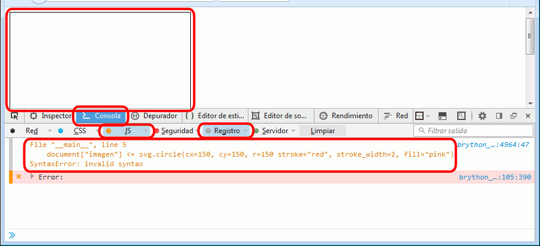
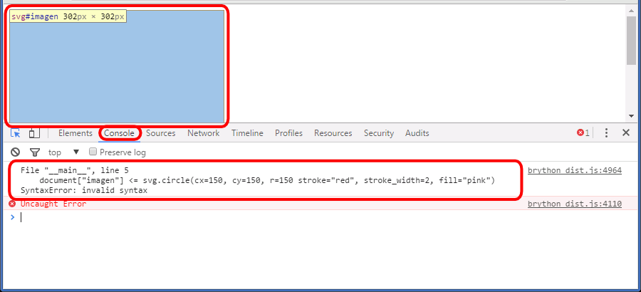

Los navegadores sólo pueden ejecutar programas escritos en JavaScript. Si en una página web se incluye un programa Python, el navegador no puede ejecutarlo directamente.
Pero existe una biblioteca JavaScript llamada Brython que traduce código Python a JavaScript, lo que permite incluir programas de Python en una página web.
Brython no es capaz de traducir cualquier programa de Python, entre otros motivos porque no entiende todos los módulos de la biblioteca estándar.
como los programas se ejecutan en el navegador, no se pueden utilizar las funciones habituales de entrada y salida de datos de Python (input() y print()), sino que se debe hacer a través de los elementos HTML. Por eso los programas escritos para ejecutarse con Brython normalmente no se pueden ejecutar fuera del navegador (por ejemplo, en IDLE).
Para utilizar Brython en una página, la página debe incluir como mínimo tres elementos, que se comentan en el siguiente ejemplo.
una etiqueta <script> que enlace a la biblioteca Brython
otra etiqueta <script> que contenga el programa de Python
<!DOCTYPE html>
<html lang="es">
<head>
<meta charset="utf-8" />
<title>Brython. Python</title> <script type="text/javascript" src="http://brython.info/src/brython_dist.js"></script> <script type="text/python3">
# Aquí se escribiría el programa de Python
</script></head><body onload="brython()"> <p>Esta página es HTML 5 válido.</p>
</body>
</html>
Esta página es HTML 5 válido
Puede ver la explicación de los elementos resaltados con un borde utilizando los iconos de avance y retroceso situados abajo a la derecha.
Los tres elementos son imprescindibles para poder ejecutar programas de Python mediante la biblioteca Brython en una página web.
Ejemplo de programa Brython 1 - Paso 1
<!DOCTYPE html>
<html lang="es">
<head>
<meta charset="utf-8" />
<title>Brython. Python</title> <script type="text/javascript" src="http://brython.info/src/brython_dist.js"></script> <script type="text/python3">
# Aquí se escribiría el programa de Python
</script></head><body onload="brython()"> <p>Esta página es HTML 5 válido.</p>
</body>
</html>
Esta página es HTML 5 válido
El primer elemento <script> enlaza con la biblioteca Brython. En este caso se utiliza la biblioteca Brython disponible en Internet, pero podría ser una copia local.
Ejemplo de programa Brython 1 - Paso 2
<!DOCTYPE html>
<html lang="es">
<head>
<meta charset="utf-8" />
<title>Brython. Python</title> <script type="text/javascript" src="http://brython.info/src/brython_dist.js"></script> <script type="text/python3">
# Aquí se escribiría el programa de Python
</script></head><body onload="brython()"> <p>Esta página es HTML 5 válido.</p>
</body>
</html>
Esta página es HTML 5 válido
El segundo elemento <script> contendría el programa de Python que se ejecutaría cada vez que se cargara la página. En este caso no hay ningún programa.
Ejemplo de programa Brython 1 - Paso 3
<!DOCTYPE html>
<html lang="es">
<head>
<meta charset="utf-8" />
<title>Brython. Python</title> <script type="text/javascript" src="http://brython.info/src/brython_dist.js"></script> <script type="text/python3">
# Aquí se escribiría el programa de Python
</script></head><body onload="brython()"> <p>Esta página es HTML 5 válido.</p>
</body>
</html>
Esta página es HTML 5 válido
En el elemento <body> se debe añadir el atributo onload con el valor brython(). El atributo onload contiene una instrucción JavaScript que se ejecuta al cargar la página. En este caso la instrucción brython() es una instrucción de la biblioteca Brython que hace que se ejecute el programa Python.
Añadir texto en un elemento HTML
Brython permite añadir texto en un elemento HTML de una página web, como muestra el siguiente ejemplo.
Puede ver la explicación de los elementos resaltados con un borde y la ejecución del programa Python utilizando los iconos de avance y retroceso situados abajo a la derecha.
Al cargar la página, el atributo onload ordena al navegador que ejecute la instrucción brython() de la biblioteca Brython, que a su vez ejecuta el programa Python incluido en la página.
La primera instrucción del programa Python importa el objeto document del módulo browser de Brython. Este objeto contiene una representación del documento y permite acceder a sus elementos.
La segunda instrucción del programa Python añade el texto "¡Hola, mundo!" a un elemento HTML.
La expresión document[destino] hace referencia al elemento de la página cuyo atributo id es igual a destino (en vez de destino podría cualquier otro nombre válido). En este caso, el elemento es un párrafo <p>
El operador <= es propio de Brython y lo que hace es añadir un nodo en el árbol del documento (añade al elemento de la izquierda lo que se escriba a la derecha). En este caso, se añade texto, concretamente la cadena "¡Hola, mundo!"
Puede ver la explicación de los elementos resaltados con un borde y la ejecución del programa Python utilizando los iconos de avance y retroceso situados abajo a la derecha.
Al cargar la página, el atributo onload ordena al navegador que ejecute la instrucción brython() de la biblioteca Brython, que a su vez ejecuta el programa Python incluido en la página.
La primera instrucción del programa Python importa el objeto document del módulo browser de Brython. Este objeto contiene una representación del documento y permite acceder a sus elementos.
Añadir elementos en una imagen SVG - Paso 3
<!DOCTYPE html>
<html lang="es">
<head>
<meta charset="utf-8" />
<title>Añadir elementos en una imagen SVG. Brython. Python</title>
<script type="text/javascript" src="http://brython.info/src/brython_dist.js"></script>
<script type="text/python3">
from browser import documentimport browser.svg as svgdocument["imagen"] <= svg.line(x1=10, y1=10, x2=190, y2=190, stroke="green", stroke_width=3) </script>
</head><body onload="brython()"> <svg version="1.1" xmlns="http://www.w3.org/2000/svg"
width="200" height="200" viewBox="0 0 200 200"
style="border: black 1px solid" id="imagen">
</svg></body>
</html>
La segunda instrucción del programa Python importa el objeto svg del módulo browser.svg de Brython. Este objeto permite crear elementos svg.
Añadir elementos en una imagen SVG - Paso 4
<!DOCTYPE html>
<html lang="es">
<head>
<meta charset="utf-8" />
<title>Añadir elementos en una imagen SVG. Brython. Python</title>
<script type="text/javascript" src="http://brython.info/src/brython_dist.js"></script>
<script type="text/python3">
from browser import document
import browser.svg as svg
document["imagen"] <= svg.line(x1=10, y1=10, x2=190, y2=190, stroke="green", stroke_width=3) </script>
</head><body onload="brython()"> <svg version="1.1" xmlns="http://www.w3.org/2000/svg"
width="200" height="200" viewBox="0 0 200 200"
style="border: black 1px solid" id="imagen">
</svg></body>
</html>
La segunda instrucción del programa Python añade una línea verde en la imagen SVG.
La expresión document[imagen] hace referencia al elemento de la página cuyo atributo id es igual a imagen (en vez de imagen podría cualquier otro nombre válido). En este caso, el elemento es una imagen <svg>
El operador <= es propio de Brython y lo que hace es añadir un nodo en el árbol del documento (añade al elemento de la izquierda lo que se escriba a la derecha). En este caso, se añade un elemento <line> al elemento <svg>
Finalmente, el elemento <line x1="10" y1="10" x2="190" y2="190" stroke="green" stroke-width="3" /> añadido a la imagen <svg> se visualiza en el navegador.
El programa del ejemplo anterior sólo añade un elemento SVG, pero se podrían añadir tantos elementos como se quisiera, añadiendo las instrucciones correspondientes en el programa.
Las instrucciones que generan los diferentes elementos SVG incluyen los argumentos correspondientes a cada elemento SVG:
Argumentos comunes
stroke: color del trazo
stroke_width: grosor del trazo (valor numérico sin unidades)
fill: color de relleno (para obtener un relleno trasparente hay que utilizar el valor none)
los valores numéricos se escriben sin comillas, el resto se escriben entre comillas
points: coordenadas de los vértices del polígono con el formato "x1,y1 x2,y2 ...". El último punto se une con el primero automáticamente, por ejemplo "10,10 50,10 50,50" dibujaría un triángulo.
points: coordenadas de los vértices de la línea con el formato "x1,y1 x2,y2 ...". El último punto no se une con el primero, por ejemplo "10,10 50,10 50,50" dibujaría dos segmentos. Las polilíneas admiten ser rellenadas y se rellenan como si fuera un polígono cerrado, uniendo el último punto con el primero.
Depurar programas
Encontrar y corregir los errores en programas de Brython es un poco más difícil que en un programa de Python ya que a los errores habituales (errores de sintaxis en Python y algoritmos incorrectos) se añaden otros (errores de sintaxis al utilizar la biblioteca Brython y errores al manipular los elementos de la página web). La dificultad reside en que el navegador no produce ningún mensaje de error: simplemente el programa no se ejecuta y el navegador muestra lo que puede.
Aunque los programas que se proponen en los ejercicios son relativamente sencillos, se recomienda si es posible probar los programas cada vez que se cambia algo, de manera que sea más fácil encontrar el origen del problema si este se produce.
Los errores más habituales son:
olvidar separar los argumentos con comas
olvidar abrir y/o cerrar con comillas los valores no numéricos
escribir incorrectamente los nombres de los argumentos (por ejemplo, x en vez de x1)
olvidar importar los objetos document o svg
Para encontrar el origen del problema conviene utilizar la consola web de Firefox o Chrome, que al menos nos indica la línea en la que se ha cometido un error de sintaxis.
El programa de ejemplo siguiente contiene un error de sintaxis que impide su ejecución, por lo que el navegador mostrá simplemente la imagen SVG vacía:.
Las herramientas de desarrollo incluidas en los navegadores actuales ayudan a localizar el origen de los errores, especialmente cuando se trata de errores de sintaxis.
En Firefox, el inspector se abre mediante el menú Herramientas > Desarrollador web > Depurador o mediante el atajo de teclado Ctrl+May+K. Como muestra la imagen siguiente, debe elegirse la Consola y los apartados JS y Registro haciendo clic sobre ellos:

En Chrome, el inspector se abre mediante el menú Personalizar > Más herramientas > Herramientas para desarrolladores o mediante el atajo de teclado Ctrl+May+C.

En ambos casos, el navegador nos indica la línea problemática, aunque somos nostros los que debemos darnos cuenta del origen del problema, en este caso que falta una coma entre los argumentos r y stroke.
Aunque lo más cómo es utilizar las herramientas para desarrolladores de los navegadores, también se puede copiar el programa Brython (sólo el programa de Python, no el resto de la página) en una ventana de IDLE y ejecutarlo. Aunque el programa no se podrá ejecutar ya que la biblioteca brython no está disponible, IDLE sí que señala los errores de sintaxis con algo más de claridad que los herramientas para desarrolladores de los navegadores.